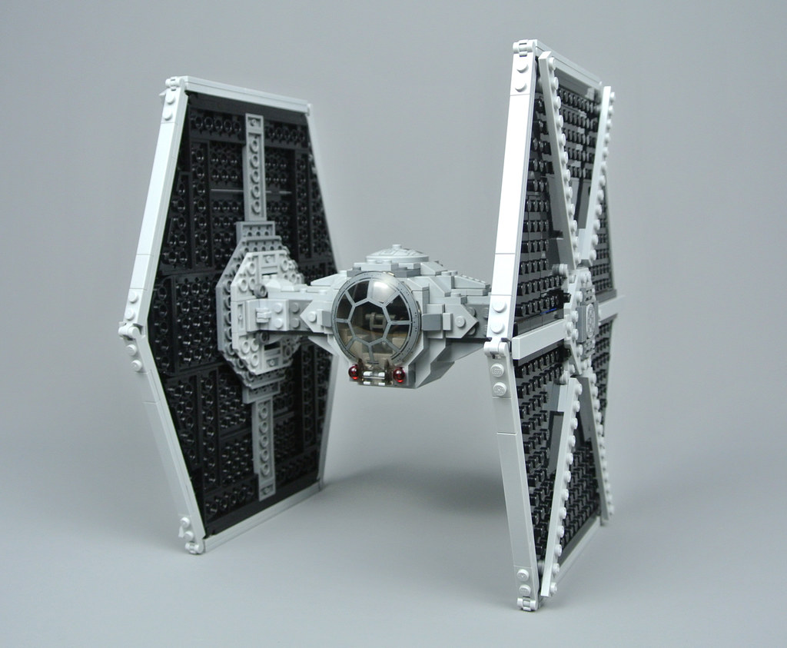

Panel principal
Briefing de misión
Bienvenido al archivo rebelde. Aquí encontrarás información básica para preparar operaciones y coordinar recursos.
Briefing: objetivos operativos para la misión.
- Revisar transmisiones entrantes.
- Confirmar ruta segura hacia el hangar.
- Preparar recursos para despegue.
Naves destacadas
X-Wing

Caza estelar versátil.
TIE Fighter

Interceptor imperial rápido.
Millennium Falcon

Transporte ligero modificado.
Consulta el hangar para más información.